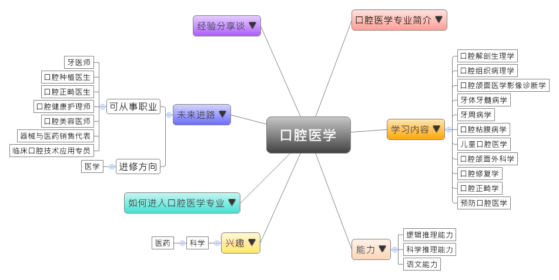
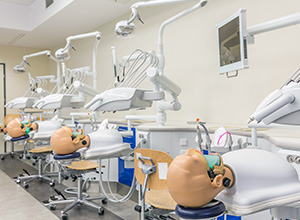

- 专业大观园
-

- 专业介绍
-
什么是口腔医学？
口腔医学是以口腔、颌面部的疾病为主要研究的对象，结合基础医学、临床医学、预防保健、美学知识，来进行口腔疾病的诊断、治疗、预防或改造，以维护口腔的正常功能和面容美观。在职场上，口腔医学专业的毕业生就业领域较宽，除了可从事口腔医疗、口腔科研与教学，也可以从事面部整容与美容。在生活上，口腔的健康对我们相当重要。若不注意口腔的健康，不仅会影响咀嚼、言语与面容美观，轻则患蛀牙、牙周病、牙齿脱落，重则可能会影响心、脑、肺等的正常运作，可知口腔不健康是许多疾病的诱因。
口腔医学专业除了训练学生具备完善的口腔医学的理论与知识，亦须具备基础医学、检验医学、临床医学、预防医学、保健医学等的专业训练，让此专业的学生能具备正确且完整的口腔健康观念。
 口腔医学临床技能实训 学生雕刻石膏牙齿模型
- 学习内容
-
口腔医学专业学生主要学习结合基础医学、临床医学与口腔医学的理论与相关知能，同时须接受口腔、颌面部疾病的诊断、治疗，以及预防保健的专业训练。
本专业学习方向通常分为四类：基础医学、临床医学、口腔专业类、实验类；其他学校也有开设职能治疗学、语言治疗学、医患沟通与技巧等课程，为学生未来就业做好准备。口腔医学专业主干课程有：人体解剖学、人体形态学实验、医学机能学实验、影像诊断学、耳鼻咽喉头颈外科学、口腔解剖生理学、口腔组织病理学、口腔颌面医学影像诊断学、牙体牙髓病学、牙周病学、口腔粘膜病学、儿童口腔医学、口腔颌面外科学、口腔修复学、口腔正畸学、预防口腔医学、卫生法学、医学伦理学、医学心理学……等。此外，本专业注重实际动手操作，大部分口腔课程皆辅以实际操作，学生须加选一门以上的实践性教学课程，如：口腔内、外科和口腔修复进行选修。
本专业可以习得的知识与获得之能力、技能列点：第一，具备诊治多发病、口腔急重症、口腔与颌面部常见疾病之处理能力；第二，掌握口腔修复的基本知识与技能；第三，了解国内口腔卫生相关之政策与法规，并具备一定的科研能力。
- 能力
-
口腔医学专业学生，需具备以下能力：
相关性向能力 说明 科学推理能力  具有诊治口腔及颌面部常见疾病的医疗能力
具有诊治口腔及颌面部常见疾病的医疗能力
熟练口腔与牙齿整复、牙体雕刻和整形的医事技术逻辑推理能力 了解口腔与颌面部疾病的成因
依据病患的作息与病症，提供正确的卫生保健知识语文能力 具备能理解西方医学新知的外语能力
具备以深入浅出的方式来表达医嘱，以及与病患沟通的能力
- 兴趣
-
若你对下列活动或事物有高度兴趣，可考虑进入口腔医学专业学习：
科学 医药 对口腔疾病成因与诊断有兴趣
喜爱牙体雕刻、修复等手作的工作
对形状、色差有敏锐的观察力与感受力
- 如何进入此专业
-
下面列举开设口腔医学专业的211工程重点大学院校：
- 未来进路
-
可从事职业
口腔医学专业其对口行业便是各大医院的口腔科，也会有诸多人开设私人的牙医诊所，而这也需通过口腔医师资格考试，经考试核可后成为正式牙医师；另有少部分学生毕业后走往教育、研究领域发展，在各医学教育、科研机构从事教学或口腔科学研究，研究范畴则多为预防与治疗口腔疾病的发生；最后则是到与牙科有关的医疗器械公司、牙科材料、牙膏公司，可从事行政或营销等工作。在工作职场上皆能发挥口腔诊断、牙科修复等专长：
行业 职业 医疗卫生 牙医师、口腔医生、口腔种植医生、口腔正畸医生、美容牙科修复医生、洁牙医生、口腔美容医师 健康相关产品批发、零售 器械销售代表、医药销售代表、临床口腔技术应用专员、牙科技师 居民服务业 口腔健康护理师、口腔高级保健师 进修方向以下列举口腔医学专业毕业生可以继续修读之学科门类、一级学科与硕士点：
学科门类 一级学科 硕士点 医学 口腔医学口腔基础医学、口腔临床医学、口腔正畸学、口腔修复学、口腔颌面外科学、口腔颌面医学影像学、儿童口腔医学、口腔黏膜病学、口腔预防医学、牙体牙髓病学、牙周病学 临床医学麻醉学 注：口腔医学专业硕士报考资格 口腔医学专业硕士报考资格
口腔医学专业硕士报考资格1.国家承认学历的应届本科毕业生
2.具有国家承认的大学本科毕业学历的人员
3.获得国家承认的高职高专毕业学历后，经2年或2年以上，达到与大学本科毕业生同等学力
4.国家承认学历的本科结业生和成人高校应届本科毕业生，按本科毕业生同等学力身份报考
- 经验分享谈
-
边画画边看病的牙医师——葛久禹
南京有这么一位医生，每次帮病人看诊，一边看病一边画给病人看。他就是葛久禹，南京市口腔医院国家临床重点专科牙体牙髓科主任，然而他对自己30岁才走上牙医之路颇为感慨。 1969年，16岁的葛久禹来到洪泽县，成为一位农民，在生产队里担任过队长，对于种田他始终自觉不是那块料，所以一到晚上就挑灯念书学习，幸运的是，1977年他考上了南京医科大学，他因为那时得到咽喉炎，想自己学习医治，没想到误以为喉咙属于口腔，便报了口腔科，阴错阳差步上了牙医之路。
当上牙医的葛久禹始终没有忘记农村基层的艰辛生活。他看到一些医生面对病患的疑问时，总会带有不耐烦的语气，葛久禹便觉得医生有责任把病情解释给患者听，他甚至认为：一个高水平的医生，应该能在5分钟内将自己5年所学的知识讲得让病人听懂。因此，他发明出了一个方法：把病情画给病人看。由于评价极高，后来葛久禹给研究生面试时都必须会画画。
从医30年来，在医院的投诉记录栏里，葛久禹竟没有收到任何一个患者的投诉，也没有发生过一次医疗纠纷，这样的成绩放眼南京是非常亮人的，他最常挂在嘴边的话是“你对患者好，患者也会对你好。”【资料来源：中国江苏网. 南京怪牙医，边画画边看病[EB/OL].】